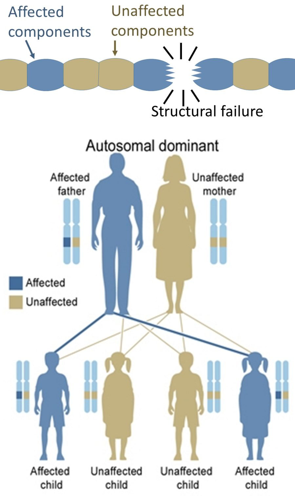

Enfermedades hereditarias
Fichas claras de las enfermedades genéticas más conocidas: causa, síntomas, herencia, diagnóstico, tratamiento y dónde informarse.
 01
01Fibrosis quística
Una de las enfermedades hereditarias graves más frecuentes en población de origen europeo. Causa, herencia, síntomas, diagnóstico y los tratamientos que han cambiado su pronóstico.
Leer → 02
02Síndrome de Down
La causa genética más frecuente de discapacidad intelectual. Qué es la trisomía 21, por qué casi nunca se hereda, qué cuidados de salud necesita y cómo ha cambiado la vida de las personas con síndrome de Down.
Leer →03Hemofilia
La «enfermedad real» de las cortes europeas. Por qué afecta casi siempre a varones, cómo se diagnostica y cómo han cambiado los tratamientos, de los factores de coagulación a la terapia génica.
Leer →
04Enfermedad de Huntington
Una enfermedad neurológica hereditaria que plantea como pocas el dilema de saber o no saber. Causa, síntomas, prueba predictiva, cuidados e investigación.
Leer →05Cáncer hereditario
BRCA1, BRCA2, síndrome de Lynch y otros. Qué parte del cáncer se hereda, cuándo sospecharlo, cómo se estudia y qué se puede hacer para prevenirlo.
Leer → 06
06Anemia falciforme y talasemias
Las enfermedades de la hemoglobina son las enfermedades hereditarias graves más frecuentes del mundo. Causa, síntomas, relación con la malaria, diagnóstico y tratamientos, incluida la primera terapia con CRISPR.
Leer → 07
07Atrofia muscular espinal
Una enfermedad grave de la infancia que ha pasado en pocos años de no tener tratamiento a tener tres. Causa, tipos, herencia y por qué el diagnóstico precoz lo cambia todo.
Leer →08Síndrome de Marfan
Una enfermedad del tejido conectivo que afecta a la aorta, los ojos y el esqueleto. Causa, signos, diagnóstico y por qué la vigilancia del corazón salva vidas.
Leer →09Hipercolesterolemia familiar
El colesterol muy alto desde la infancia que pasa de padres a hijos. Es frecuente, está infradiagnosticada y tiene tratamiento eficaz. Cómo sospecharla, confirmarla y tratarla.
Leer →10Distrofia muscular de Duchenne
La distrofia muscular más frecuente de la infancia. Por qué afecta casi solo a niños, cómo se diagnostica y qué tratamientos existen hoy, de los corticoides a la terapia génica.
Leer →11Síndrome X frágil
La causa hereditaria más frecuente de discapacidad intelectual y la causa genética conocida más común de autismo. Una enfermedad de repeticiones que crece de generación en generación.
Leer →12Fenilcetonuria
El primer error congénito del metabolismo que se aprendió a detectar en todos los recién nacidos. Gracias a la prueba del talón y a una dieta especial, quienes la tienen crecen con un desarrollo normal.
Leer → 13
13Hemocromatosis hereditaria
La enfermedad genética más frecuente en personas de origen europeo. El cuerpo absorbe demasiado hierro y lo acumula durante décadas, pero si se detecta a tiempo se trata con algo tan sencillo como sacar sangre.
Leer →14Neurofibromatosis tipo 1
Una de las enfermedades genéticas dominantes más frecuentes, con manchas café con leche y tumores benignos en los nervios. Ahora existe el primer fármaco dirigido para sus tumores más difíciles.
Leer → 15
15Síndrome de Turner
Afecta solo a niñas y mujeres, a las que les falta total o parcialmente uno de los dos cromosomas X. La talla baja y la insuficiencia ovárica son sus rasgos principales, y un buen seguimiento cambia el pronóstico.
Leer →16Síndrome de Klinefelter
La alteración cromosómica más frecuente en hombres, con un cromosoma X de más. Muchos no lo saben nunca, y a menudo se descubre por infertilidad. Diagnosticarlo a tiempo permite tratar la falta de testosterona.
Leer → 17
17Poliquistosis renal autosómica dominante
La enfermedad renal hereditaria más frecuente. Los riñones se llenan de quistes durante décadas y es una causa importante de diálisis. Hoy hay un fármaco que frena su avance.
Leer →18Distrofia miotónica
La distrofia muscular más frecuente en adultos. Los músculos no se relajan bien tras contraerse, pero afecta también al corazón, los ojos y el cerebro. Y se agrava de una generación a la siguiente.
Leer →19Síndromes de Prader-Willi y Angelman
Dos enfermedades muy distintas causadas por el mismo trozo del cromosoma 15. Cuál aparece depende de si el cambio viene del padre o de la madre: el mejor ejemplo de impronta genómica.
Leer →20Tay-Sachs y otras enfermedades lisosomales
Más de 70 enfermedades en las que el "centro de reciclaje" de las células no funciona y se acumulan sustancias. Tay-Sachs, Gaucher, Fabry y Pompe, y cómo se tratan hoy.
Leer →21Retinosis pigmentaria y amaurosis congénita de Leber
Las distrofias hereditarias de la retina son la principal causa de ceguera genética. Más de 300 genes pueden estar implicados, y una de ellas tuvo la primera terapia génica aprobada para una enfermedad hereditaria.
Leer →22Síndromes de Ehlers-Danlos
Un grupo de 13 enfermedades del tejido conectivo con articulaciones muy laxas, piel elástica y frágil y, en algunos tipos, riesgo de rotura de arterias. El tipo más común aún no tiene gen conocido.
Leer →23Ataxia de Friedreich
La ataxia hereditaria más frecuente. Una repetición de tres letras en el gen de la frataxina daña los nervios y el corazón desde la adolescencia. Desde 2023 existe el primer tratamiento aprobado.
Leer →24ELA hereditaria
Entre el 5 y el 10 % de los casos de esclerosis lateral amiotrófica son familiares. Los genes C9orf72 y SOD1 son los más frecuentes, y para SOD1 ya existe el primer fármaco dirigido a un gen.
Leer →25Miocardiopatía hipertrófica y síndrome de QT largo
Dos cardiopatías hereditarias que pueden causar muerte súbita en personas jóvenes y aparentemente sanas. Cuando una persona joven muere de forma súbita, estudiar a su familia salva vidas.
Leer →26Déficit de alfa-1 antitripsina
Una enfermedad hereditaria que daña los pulmones y el hígado, y que está muy infradiagnosticada. España tiene una de las frecuencias más altas del mundo de la variante S, y fumar multiplica el daño.
Leer →27Síndrome de Rett
Una enfermedad del desarrollo del cerebro que afecta casi solo a niñas. Tras un primer año aparentemente normal, pierden el habla y el uso de las manos. Experimentos en ratones demostraron que es reversible, y ya existe el primer fármaco.
Leer →28Acondroplasia
La causa más frecuente de talla baja desproporcionada. Casi siempre se debe a un único cambio, siempre la misma letra, en el gen FGFR3. Desde 2021 hay un tratamiento que aumenta el crecimiento, la vosoritida.
Leer →